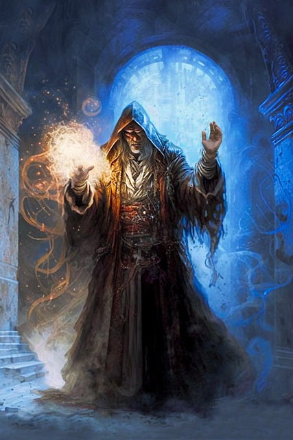

Du näherst dich ihm
Du hast nun all deinen Mut zusammen genommen und gehst sichern schrittes auf ihn zu
Als du nah genug an ihm heran getreten bist erhob er sich , er hatte sich in einen Sessel in der Eckes des Raumes gesetzt
Nun kannst du ihn erkennen

Mit tiefer aber weiser Stimme sagte er :
Magier:
Du sterblicher , was hast du zusuchen in meinem eigenem Heim.Ich dachte du währst idese Kreatur die ,mich schon seit
Tagen Heimsucht
Deine Antwort ?
- Wer bist du und wo sind wir hier?